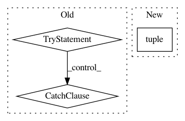

5aab2436c4548d51b6dde2fc7867a6804d6380fd,tensorlayer/layers/dense/base_dense.py,Dense,build,#Dense#Any#,97
Before Change
**self.W_init_args
)
if self.b_init is not None:
try:
self.b = tf.get_variable(
name="b", shape=(self.n_units), initializer=self.b_init, dtype=LayersConfig.tf_dtype,
**self.b_init_args
)
except Exception: // If initializer is a constant, do not specify shape.
self.b = tf.get_variable(
name="b", initializer=self.b_init, dtype=LayersConfig.tf_dtype, **self.b_init_args
)
self.add_weights(self.W, self.b)
def forward(self, inputs, is_train):
outputs = tf.matmul(inputs, self.W)
After Change
// if self.b_init is not None:
// self._make_weight(name=self.name, name2="b", shape=(self.n_units))
shape = [inputs_shape[1], self.n_units]
self._add_weight(self.name, "w1", tuple(shape))
self._add_weight(self.name, "b1", int(self.n_units))
outputs_shape = [inputs_shape[0], self.n_units]
return outputs_shape
In pattern: SUPERPATTERN
Frequency: 3
Non-data size: 3
Instances
Project Name: tensorlayer/tensorlayer
Commit Name: 5aab2436c4548d51b6dde2fc7867a6804d6380fd
Time: 2019-01-08
Author: jingqing.zhang15@imperial.ac.uk
File Name: tensorlayer/layers/dense/base_dense.py
Class Name: Dense
Method Name: build
Project Name: NervanaSystems/nlp-architect
Commit Name: c9e73e23d952569574d23aafad6479caa5828b49
Time: 2018-05-14
Author: amit.yaccobi@intel.com
File Name: examples/np_semantic_segmentation/feature_extraction.py
Class Name: PalmettoClass
Method Name: get_pmi_score
Project Name: tensorlayer/tensorlayer
Commit Name: ab50820c352bef9a551ec6349ad73397c1529cf5
Time: 2019-01-15
Author: dhsig552@163.com
File Name: tensorlayer/layers/dense/binary_dense.py
Class Name: BinaryDense
Method Name: build